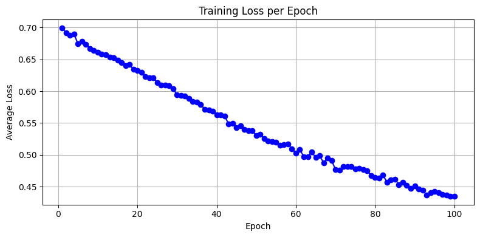
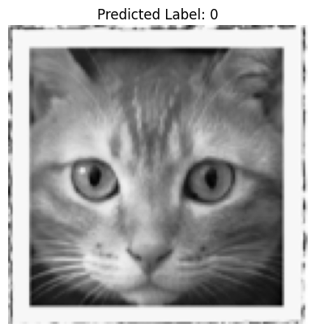
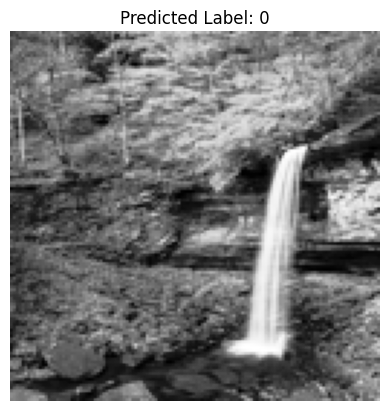
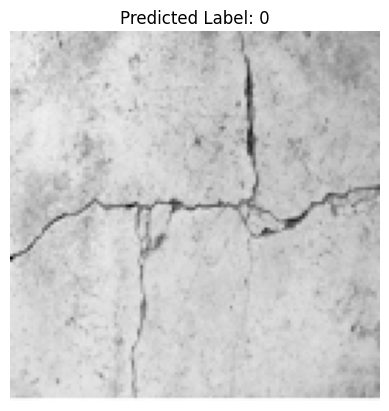
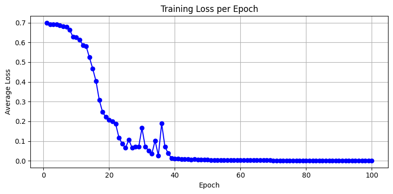

14.5 ANN in PyTorch to Detect Cracks#
In this example we will apply our single-layer ANN model to detect cracks in images. Here we are flattening the images so will lose spatial information, might consider a convolution kernel to preserve spatial relationships.
The data are sourced from:
Workflow:
Destroy existing data (need explained below)
Obtain the original dataset (.zip)
Use python libraries to extract the images; they are stored in MatLab.mat file structures.
Store imgaes locally into subdirectories for processing
Then apply our ANN (homebrew or PyTorch)
%reset -f
Note
In this example, we delete the processed data primarily due to GitHub file size limitations and to demonstrate a clean, reproducible workflow.
In real-world research or applications, you typically do not delete large datasets once downloaded and processed. Instead, you would:
Archive them to a reliable location
Use versioning and metadata to track provenance
Avoid redundant downloads to conserve bandwidth and storage
This cleanup is used here for pedagogical clarity and control, especially in constrained teaching environments.
Data Cleanup Block#
Warning
The code block below will permanently delete all downloaded and generated data, including:
Extracted .mat files and working directories
Converted .png image files
CSV files containing image labels
Only run this cell if:
You want to start fresh
You have already backed up your work (if needed)
You're confident all required artifacts can be re-downloaded and regenerated
This is a reasonable practice to demonstrate reproducibility and manage disk space — but treat it with care!
import shutil
import os
# Define directories to delete
dirs_to_remove = [
"extracted_dataset", # Contains mmc1 and .mat files
"images", # Contains all converted PNGs
"labels" # CSV files mapping filenames to labels
]
for target_dir in dirs_to_remove:
if os.path.exists(target_dir):
print(f"Deleting: {target_dir}")
shutil.rmtree(target_dir)
else:
print(f"Directory not found (already deleted?): {target_dir}")
print("Cleanup complete.")
Deleting: extracted_dataset
Deleting: images
Deleting: labels
Cleanup complete.
import os
import zipfile
import requests
from scipy.io import loadmat
import numpy as np
import matplotlib.pyplot as plt
url = "https://ars.els-cdn.com/content/image/1-s2.0-S002074032100429X-mmc1.zip"
# Step 1: Download the ZIP archive
def download_file(url, output_path):
if not os.path.exists(output_path):
print(f"Downloading {url}...")
response = requests.get(url)
response.raise_for_status()
with open(output_path, "wb") as f:
f.write(response.content)
print(f"Saved to {output_path}")
else:
print(f"File already exists: {output_path}")
# Workflow paths
url = "https://ars.els-cdn.com/content/image/1-s2.0-S002074032100429X-mmc1.zip"
zip_file = "dataset.zip"
extract_dir = "extracted_dataset"
png_output_dir = "images"
# Execute workflow
download_file(url, zip_file)
File already exists: dataset.zip
# Step 2: Extract ZIP archive
def extract_zip(zip_path, extract_to):
print(f"Extracting {zip_path}...")
with zipfile.ZipFile(zip_path, 'r') as zip_ref:
zip_ref.extractall(extract_to)
print(f"Extracted to {extract_to}")
extract_zip(zip_file, extract_dir)
Extracting dataset.zip...
Extracted to extracted_dataset
def convert_mat_to_pngs(mat_dir, output_dir):
os.makedirs(output_dir, exist_ok=True)
for filename in os.listdir(mat_dir):
if filename.endswith(".mat"):
full_path = os.path.join(mat_dir, filename)
print(f"Processing {filename}...")
mat_data = loadmat(full_path)
# Try to guess the structure
for key in mat_data:
if not key.startswith("__"):
images = mat_data[key]
# Check dimensions
if images.ndim == 3:
for i in range(images.shape[2]):
img = images[:, :, i]
img = np.squeeze(img)
output_filename = f"{os.path.splitext(filename)[0]}_{i:03d}.png"
plt.imsave(os.path.join(output_dir, output_filename), img, cmap='gray')
elif images.ndim == 4:
for i in range(images.shape[3]):
img = images[:, :, :, i]
output_filename = f"{os.path.splitext(filename)[0]}_{i:03d}.png"
plt.imsave(os.path.join(output_dir, output_filename), img)
else:
print(f"Skipping unexpected shape: {images.shape}")
break # process only first candidate
print("Done.")
convert_mat_to_pngs(os.path.join(extract_dir, "mmc1"), png_output_dir)
Processing NT_NN.mat...
Skipping unexpected shape: (1, 1)
Processing UT_NN.mat...
Skipping unexpected shape: (1, 1)
Processing NT_TestSet_Features.mat...
Skipping unexpected shape: (8, 1407)
Processing ASB_NN.mat...
Skipping unexpected shape: (1, 1)
Processing ASB_TestSet_Features.mat...
Skipping unexpected shape: (21, 3741)
Processing ASB_TestSet_Imgs.mat...
Processing NT_TestSet_Imgs.mat...
Processing UT_TestSet_Imgs.mat...
Processing UT_TestSet_Features.mat...
Skipping unexpected shape: (6, 881)
Done.
This block moves files into subdirectories
import os
import shutil
# Base source directory
source_dir = "./images"
# --- ASB ---
asb_target_dir = os.path.join(source_dir, "ASB")
os.makedirs(asb_target_dir, exist_ok=True)
for filename in os.listdir(source_dir):
if filename.startswith("ASB_Test"):
src_path = os.path.join(source_dir, filename)
dst_path = os.path.join(asb_target_dir, filename)
if os.path.exists(src_path): # only move if it still exists
shutil.move(src_path, dst_path)
# --- NT ---
nt_target_dir = os.path.join(source_dir, "NT")
os.makedirs(nt_target_dir, exist_ok=True)
for filename in os.listdir(source_dir):
if filename.startswith("NT_Test"):
src_path = os.path.join(source_dir, filename)
dst_path = os.path.join(nt_target_dir, filename)
if os.path.exists(src_path):
shutil.move(src_path, dst_path)
# --- UT ---
ut_target_dir = os.path.join(source_dir, "UT")
os.makedirs(ut_target_dir, exist_ok=True)
for filename in os.listdir(source_dir):
if filename.startswith("UT_Test"):
src_path = os.path.join(source_dir, filename)
dst_path = os.path.join(ut_target_dir, filename)
if os.path.exists(src_path):
shutil.move(src_path, dst_path)
import os
import pandas as pd
from scipy.io import loadmat
# --- ASB ---
prefix = "ASB"
mat_path = f"extracted_dataset/mmc1/{prefix}_TestSet_Features.mat"
output_csv = f"labels/{prefix}_labels.csv"
mat_data = loadmat(mat_path)
labels = mat_data['YTest'].squeeze()
filenames = [f"{prefix}_Image_{i:03d}.png" for i in range(len(labels))]
df = pd.DataFrame({'filename': filenames, 'label': labels.astype(int)})
os.makedirs("labels", exist_ok=True)
df.to_csv(output_csv, index=False)
print(f"Saved {len(df)} labels to {output_csv}")
# --- NT ---
prefix = "NT"
mat_path = f"extracted_dataset/mmc1/{prefix}_TestSet_Features.mat"
output_csv = f"labels/{prefix}_labels.csv"
mat_data = loadmat(mat_path)
labels = mat_data['YTest'].squeeze()
filenames = [f"{prefix}_Image_{i:03d}.png" for i in range(len(labels))]
df = pd.DataFrame({'filename': filenames, 'label': labels.astype(int)})
os.makedirs("labels", exist_ok=True)
df.to_csv(output_csv, index=False)
print(f"Saved {len(df)} labels to {output_csv}")
# --- UT ---
prefix = "UT"
mat_path = f"extracted_dataset/mmc1/{prefix}_TestSet_Features.mat"
output_csv = f"labels/{prefix}_labels.csv"
mat_data = loadmat(mat_path)
labels = mat_data['YTest'].squeeze()
filenames = [f"{prefix}_Image_{i:03d}.png" for i in range(len(labels))]
df = pd.DataFrame({'filename': filenames, 'label': labels.astype(int)})
os.makedirs("labels", exist_ok=True)
df.to_csv(output_csv, index=False)
print(f"Saved {len(df)} labels to {output_csv}")
Saved 3741 labels to labels/ASB_labels.csv
Saved 1407 labels to labels/NT_labels.csv
Saved 881 labels to labels/UT_labels.csv
shutil.move("./labels/ASB_labels.csv", "./images/ASB/")
shutil.move("./labels/NT_labels.csv", "./images/NT/")
shutil.move("./labels/UT_labels.csv", "./images/UT/");
PyTorch ANN (Same dataset(s))#
The file pathnames are unique to my computer and are shown here so the notebook renders and typesets correctly.
import numpy # useful numerical routines
import scipy.special # special functions library
import scipy.misc # image processing code
#import imageio # deprecated as typical
import imageio.v2 as imageio
import matplotlib.pyplot # import plotting routines
## Pre-processing Build training and testing sets
# now we have to flatten each image, put into a csv file, and add the truth table
# myann expects [truth, image fields ....]
# howmanyimages = 881
import csv
howmanyimages = 440 # a small subset for demonstration
testimage = numpy.array([i for i in range(howmanyimages)])
split = 0.1 # fraction to hold out for testing
numwritten = 0
# training file
outputfile1 = "ut-881-train.csv" #local to this directory
outfile1 = open(outputfile1,'w') # open the file in the write mode
writer1 = csv.writer(outfile1) # create the csv writer
# testing file
outputfile2 = "ut-881-test.csv" #local to this directory
outfile2 = open(outputfile2,'w') # open the file in the write mode
writer2 = csv.writer(outfile2) # create the csv writer
# process truth table (absolute pathname)
groundtruth = open("/home/sensei/ce-5319-webroot/MLBE4CE/chapters/14-neuralnetworks/images/UT/UT_labels.csv","r") #open the file in the reader mode
reader = csv.reader(groundtruth)
truthtable=[] # empty list to store class
for row in reader:
truthtable.append(row[1])
for irow in range(len(truthtable)-1):
truthtable[irow]=truthtable[irow+1] # shift all entries by 1
# Assume truthtable, split, howmanyimages, writer1, writer2, outfile1, outfile2 already defined
numwritten = 0
np.random.seed(42)
Ntest = 0
Ntrain = 0
for i in range(howmanyimages):
# build zero-padded image filename: 000, 001, ...
image_name = f"/home/sensei/ce-5319-webroot/MLBE4CE/chapters/14-neuralnetworks/images/UT/UT_TestSet_Imgs_{i:03}.png"
# read and flatten image
img_array = imageio.imread(image_name, mode='F')
img_data = 255.0 - img_array.flatten() # ensure it's 1D, matches reshape(16384)
# add label to the front
newimage = np.insert(img_data, 0, float(truthtable[i]))
# randomly assign to training or test set
if np.random.uniform() <= split:
writer2.writerow(newimage)
Ntest += 1
else:
writer1.writerow(newimage)
Ntrain += 1
numwritten += 1
outfile1.close()
outfile2.close()
print("Total images segregated and processed:", numwritten)
print("Training images segregated and processed:", Ntrain)
print("Testing images segregated and processed:", Ntest)
print("Lost images :",numwritten - Ntrain - Ntest)
Total images segregated and processed: 440
Training images segregated and processed: 384
Testing images segregated and processed: 56
Lost images : 0
import torch
import torch.nn as nn
import torch.nn.functional as F
from torch.utils.data import Dataset, DataLoader
import pandas as pd
import numpy as np
# Hyperparameters
INPUT_SIZE = 128 * 128
HIDDEN_SIZE = INPUT_SIZE // 10
OUTPUT_SIZE = 2
LEARNING_RATE = 0.01
EPOCHS = 100
BATCH_SIZE = 8
# Define the ANN model
class SimpleANN(nn.Module):
def __init__(self):
super(SimpleANN, self).__init__()
self.fc1 = nn.Linear(INPUT_SIZE, HIDDEN_SIZE)
self.fc2 = nn.Linear(HIDDEN_SIZE, OUTPUT_SIZE)
def forward(self, x):
x = torch.sigmoid(self.fc1(x))
x = torch.sigmoid(self.fc2(x))
return x
# Custom Dataset
class UTDataset(Dataset):
def __init__(self, csv_path):
df = pd.read_csv(csv_path, header=None)
self.X = df.iloc[:, 1:].values.astype(np.float32)
self.y = df.iloc[:, 0].values.astype(np.int64)
# Normalize like before
self.X = (self.X / 255.0 * 0.99) + 0.01
def __len__(self):
return len(self.y)
def __getitem__(self, idx):
return torch.from_numpy(self.X[idx]), self.y[idx]
# Load datasets
train_dataset = UTDataset("ut-881-train.csv")
test_dataset = UTDataset("ut-881-test.csv")
train_loader = DataLoader(train_dataset, batch_size=BATCH_SIZE, shuffle=True)
test_loader = DataLoader(test_dataset, batch_size=1)
# Initialize model, loss, optimizer
model = SimpleANN()
criterion = nn.CrossEntropyLoss()
#criterion = nn.MSELoss() # similar to original
optimizer = torch.optim.SGD(model.parameters(), lr=LEARNING_RATE)
#optimizer = torch.optim.Adam(model.parameters(), lr=LEARNING_RATE)
loss_history = [] # store average loss per epoch
verbose = False
##### TRAINING LOOP #####
print("Starting training...")
for epoch in range(EPOCHS):
model.train()
epoch_loss = 0.0
for batch_X, batch_y in train_loader:
outputs = model(batch_X)
loss = criterion(outputs, batch_y)
optimizer.zero_grad()
loss.backward()
optimizer.step()
epoch_loss += loss.item() * batch_X.size(0) # accumulate batch loss
avg_loss = epoch_loss / len(train_loader.dataset)
loss_history.append(avg_loss)
if verbose:
print(f"Epoch {epoch+1}/{EPOCHS}, Avg Loss: {avg_loss:.4f}")
print("Training complete.\n")
#########################
import matplotlib.pyplot as plt
plt.figure(figsize=(8, 4))
plt.plot(range(1, EPOCHS+1), loss_history, marker='o', linestyle='-', color='blue')
plt.title("Training Loss per Epoch")
plt.xlabel("Epoch")
plt.ylabel("Average Loss")
plt.grid(True)
plt.tight_layout()
plt.show()
# Evaluation loop
model.eval()
correct = 0
total = 0
verbose = False
print("Running test set predictions...")
with torch.no_grad():
for X_test, y_test in test_loader:
output = model(X_test)
_, predicted = torch.max(output.data, 1)
if verbose:
print(f"predict = {predicted.item()} true = {y_test.item()} = {'correct' if predicted == y_test else 'wrong'}")
total += 1
correct += (predicted == y_test).sum().item()
accuracy = correct / total
print(f"Performance = {accuracy:.4f}")
Starting training...
Training complete.

Running test set predictions...
Performance = 0.8214
Interpretation of Loss Curve#
Steady decline → healthy learning
Early plateau → learning rate too low
Noisy or rising → learning rate too high or data inconsistency
import imageio.v2 as imageio # PyTorch prefers Pillow, but this keeps your original structure
import matplotlib.pyplot as plt
import numpy as np
import torch
def classify_and_display_image_pytorch(model, image_path):
"""Classify a new image using the trained PyTorch model and display it."""
# Load grayscale image
img_array = imageio.imread(image_path, mode='F') # float32 output
img_array = np.max(img_array) - img_array # Invert colors (as done in MNIST)
# Normalize and reshape
img_data = (img_array / 255.0 * 0.99) + 0.01
input_tensor = torch.tensor(img_data.flatten(), dtype=torch.float32).unsqueeze(0) # shape: [1, 784]
# Disable gradient tracking for inference
with torch.no_grad():
output = model(input_tensor)
label = torch.argmax(output).item()
# Plot image and prediction
plt.imshow(img_array, cmap='Greys')
plt.title(f"Predicted Label: {label}")
plt.axis('off')
plt.show()
return label
classify_and_display_image_pytorch(model, "/home/sensei/ce-5319-webroot/MLBE4CE/chapters/14-neuralnetworks/cat128.png")

0
classify_and_display_image_pytorch(model, "/home/sensei/ce-5319-webroot/MLBE4CE/chapters/14-neuralnetworks/waterfall128.png")

0
classify_and_display_image_pytorch(model, "/home/sensei/ce-5319-webroot/MLBE4CE/chapters/14-neuralnetworks/concrete-cracks.png")

0
PyTorch Convolution Neural Network#
A Convolutional Neural Network (CNN) approach, is much more natural for spatially structured data like the 128×128 grayscale crack/no-crack images.
Why Use a CNN Here?#
The current MLP (fully connected layers) flattens the image and ignores spatial structure.
A CNN with a 9-pixel mask (i.e., a 3×3 convolution kernel; other kernels can be used) learns spatial patterns, such as edges and textures — precisely what you’d want for detecting cracks. The 3×3 convolution filter, slides across the image with padding to preserve dimensions. In CNNs, the filter weights are learned, not fixed - so that is a huge advantage to having to specify interpolative functions (as is done in other image processing contexts).
Illustrative code (in PyTorch) is simply replacing a few parts in the code above.
import torch
import torch.nn as nn
import torch.nn.functional as F
from torch.utils.data import Dataset, DataLoader
import pandas as pd
import numpy as np
# Hyperparameters
INPUT_SIZE = 128 * 128
HIDDEN_SIZE = INPUT_SIZE // 10
OUTPUT_SIZE = 2
LEARNING_RATE = 0.01
EPOCHS = 100
BATCH_SIZE = 8
# Define the CNN model
class SimpleCNN(nn.Module):
def __init__(self):
super(SimpleCNN, self).__init__()
self.conv1 = nn.Conv2d(in_channels=1, out_channels=8, kernel_size=3, padding=1) # 3×3 mask
self.pool = nn.MaxPool2d(kernel_size=2, stride=2) # Downsamples 128×128 → 64×64
self.conv2 = nn.Conv2d(8, 16, 3, padding=1) # Second convolution
self.fc1 = nn.Linear(16 * 32 * 32, 64) # Flattened after second pooling
self.fc2 = nn.Linear(64, 2) # Final classification (2 classes)
def forward(self, x):
x = self.pool(torch.relu(self.conv1(x))) # [batch, 8, 64, 64]
x = self.pool(torch.relu(self.conv2(x))) # [batch, 16, 32, 32]
x = x.view(-1, 16 * 32 * 32) # Flatten
x = torch.relu(self.fc1(x))
x = self.fc2(x)
return x
# Custom Dataset
class UTDataset(Dataset):
def __init__(self, csv_path):
df = pd.read_csv(csv_path, header=None)
self.X = df.iloc[:, 1:].values.astype(np.float32)
self.y = df.iloc[:, 0].values.astype(np.int64)
# Normalize like before
self.X = (self.X / 255.0 * 0.99) + 0.01
def __len__(self):
return len(self.y)
#def __getitem__(self, idx):
# return torch.from_numpy(self.X[idx]), self.y[idx]
def __getitem__(self, idx):
x = self.X[idx].reshape(1, 128, 128) # Add channel dimension
return torch.from_numpy(x), self.y[idx]
# Load datasets
train_dataset = UTDataset("ut-881-train.csv")
test_dataset = UTDataset("ut-881-test.csv")
train_loader = DataLoader(train_dataset, batch_size=BATCH_SIZE, shuffle=True)
test_loader = DataLoader(test_dataset, batch_size=1)
# Initialize model, loss, optimizer
model = SimpleCNN()
criterion = nn.CrossEntropyLoss()
#criterion = nn.MSELoss() # similar to original
optimizer = torch.optim.SGD(model.parameters(), lr=LEARNING_RATE)
#optimizer = torch.optim.Adam(model.parameters(), lr=LEARNING_RATE)
loss_history = [] # store average loss per epoch
verbose = False
##### TRAINING LOOP #####
print("Starting training...")
for epoch in range(EPOCHS):
model.train()
epoch_loss = 0.0
for batch_X, batch_y in train_loader:
outputs = model(batch_X)
loss = criterion(outputs, batch_y)
optimizer.zero_grad()
loss.backward()
optimizer.step()
epoch_loss += loss.item() * batch_X.size(0) # accumulate batch loss
avg_loss = epoch_loss / len(train_loader.dataset)
loss_history.append(avg_loss)
if verbose:
print(f"Epoch {epoch+1}/{EPOCHS}, Avg Loss: {avg_loss:.4f}")
print("Training complete.\n")
#########################
import matplotlib.pyplot as plt
plt.figure(figsize=(8, 4))
plt.plot(range(1, EPOCHS+1), loss_history, marker='o', linestyle='-', color='blue')
plt.title("Training Loss per Epoch")
plt.xlabel("Epoch")
plt.ylabel("Average Loss")
plt.grid(True)
plt.tight_layout()
plt.show()
# Evaluation loop
model.eval()
correct = 0
total = 0
verbose = False
print("Running test set predictions...")
with torch.no_grad():
for X_test, y_test in test_loader:
output = model(X_test)
_, predicted = torch.max(output.data, 1)
if verbose:
print(f"predict = {predicted.item()} true = {y_test.item()} = {'correct' if predicted == y_test else 'wrong'}")
total += 1
correct += (predicted == y_test).sum().item()
accuracy = correct / total
print(f"Performance = {accuracy:.4f}")
Starting training...
Training complete.

Running test set predictions...
Performance = 0.9464
def predict_image(img_path, model):
import imageio.v3 as imageio
img_array = imageio.imread(img_path, mode='F')
img_array = np.max(img_array) - img_array # Invert colors
img_data = 255.0 - img_array.flatten()
img_data = ((img_data / 255.0) * 0.99) + 0.01
img_tensor = torch.from_numpy(img_data.astype(np.float32).reshape(1, 1, 128, 128)) # shape: [1,1,128,128]
model.eval()
with torch.no_grad():
out = model(img_tensor)
label = torch.argmax(out).item()
# Plot image and prediction
plt.imshow(img_array, cmap='Greys')
plt.title(f"Predicted Label: {label}")
plt.axis('off')
plt.show()
return label
predict_image("/home/sensei/ce-5319-webroot/MLBE4CE/chapters/14-neuralnetworks/concrete-cracks.png" ,model)
1
predict_image("/home/sensei/ce-5319-webroot/MLBE4CE/chapters/14-neuralnetworks/waterfall128.png" ,model)
0
predict_image("/home/sensei/ce-5319-webroot/MLBE4CE/chapters/14-neuralnetworks/cat128.png" ,model)
1